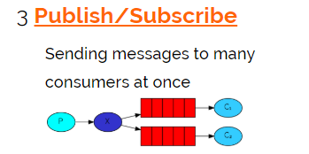

Saas-Export第14天
学习目标
1、能够说出什么是消息队列
2、能够安装RabbitMQ
3、能够编写RabbitMQ的入门程序
4、能够说出RabbitMQ的5种模式特征
5、能够使用Spring整合RabbitMQ
1. Quartz 任务调度框架
概述
在实际项目开发中，除了Web应用、SOA服务外，还有一类不可缺少的，那就是定时任务调度。定时任务的场景可以说非常广泛：
某些网站会定时发送优惠邮件。
银行系统还款日信用卡催收款。
某些应用的生日祝福短信等。完成这些功能都需要用到定时任务调度。那究竟何为定时任务调度，一句话概括就是：基于给定的时间点、给定的时间间隔、给定的执行次数自动执行的任务
JDK的Timer (定时任务只能执行一次，) , Quartz 、 Spring Task 、 （分布式的ElasticJob）
Quartz框架的介绍

Quartz是一个完全由Java编写的开源任务调度的框架，通过触发器设置作业定时运行规则，控制作业的运行时间。其中quartz集群通过故障切换和负载平衡的功能，能给调度器带来高可用性和伸缩性。主要用来执行定时任务，如：定时发送信息、定时生成报表等等。
Quartz框架的主要特点：
· 强大的调度功能，例如丰富多样的调度方法，可以满足各种常规和特殊需求；
· 灵活的应用方式，比如支持任务调度和任务的多种组合，支持数据的多种存储；
· 支持分布式集群，在被Terracotta收购之后，在原来基础上进行了进一步的改造。
任务调用：
- 你要干什么
- 你什么时候去干（触发器+到时间点马上就会触发）
Quartz使用
步骤:
- export_web_manager添加依赖
- 编写任务类（你要什么？）
- 编写Spring整合Quartz配置
- 启动服务
实现：
- export_web_manager添加依赖
使用Spring整合Quartz：
<!--定时任务 -->
<dependency>
<groupId>org.quartz-scheduler</groupId>
<artifactId>quartz</artifactId>
<version>2.2.3</version>
</dependency> - 编写任务类
图1：
图2：
package cn.itcast.web.task;
import java.text.SimpleDateFormat;
import java.util.Date;
//任务类:定义你要干什么事情
public class MyTask {
public void showTime(){
SimpleDateFormat dateFormat = new SimpleDateFormat("yyyy-MM-dd HH:mm:ss");
System.out.println("当前时间："+dateFormat.format(new Date()));
}
}
在web.xml配置启动spirng==（已完成）==
<?xml version="1.0" encoding="UTF-8"?> <web-app xmlns:xsi="http://www.w3.org/2001/XMLSchema-instance" xmlns="http://java.sun.com/xml/ns/javaee" xsi:schemaLocation="http://java.sun.com/xml/ns/javaee http://java.sun.com/xml/ns/javaee/web-app_2_5.xsd" version="2.5"> <!--启动spring--> <context-param> <param-name>contextConfigLocation</param-name> <param-value>classpath*:spring/applicationContext-*.xml</param-value> </context-param> <listener> <listener-class>org.springframework.web.context.ContextLoaderListener</listener-class> </listener> </web-app>
编写Spring整合Quartz配置
图1：
图2：
<?xml version="1.0" encoding="UTF-8"?> <beans xmlns="http://www.springframework.org/schema/beans" xmlns:xsi="http://www.w3.org/2001/XMLSchema-instance" xsi:schemaLocation="http://www.springframework.org/schema/beans http://www.springframework.org/schema/beans/spring-beans.xsd"> <!--1. 定义任务的详情（你要干什么）--> <!--创建任务类对象--> <bean id="myTask" class="cn.itcast.web.task.MyTask"/> <bean id="jobDetail" class="org.springframework.scheduling.quartz.MethodInvokingJobDetailFactoryBean"> <!--任务对象--> <property name="targetObject" ref="myTask"/> <!--任务的方法--> <property name="targetMethod" value="showTime"/> </bean> <!--2. 定义触发器（什么时间出发上面的事情）--> <bean id="trigger" class="org.springframework.scheduling.quartz.CronTriggerFactoryBean" > <!--任务详情--> <property name="jobDetail" ref="jobDetail"/> <!--时间表达式 : 秒 分 时 日 月 周 [年] 注意： 1.周与日是冲突的,只能写一个。 1（日） 1 1(周) 2021 , 不能指定的值使用？表示 2.年是可以省略不写的。 需求： 每两秒执行一次当前系统时间 --> <property name="cronExpression" value="0/2 * * * * ? *"/> </bean> <!--3. 把触发器交给任务调度工厂--> <bean class="org.springframework.scheduling.quartz.SchedulerFactoryBean"> <property name="triggers"> <array> <ref bean="trigger"/> </array> </property> </bean> </beans>启动服务
小结
1. quartz 使用步骤
- 添加依赖
- 创建一个任务类
- 编写spring整合quartz的核心配置类
- 定义任务详情
- 定义触发器 时间表达式： 秒 分 时 日 月 周 年
- 把触发器交给任务调度工厂2. Quartz 任务调度表达式语法
介绍
Quartz cron 表达式的格式十分类似于 UNIX cron 格式，但还是有少许明显的区别。区别之一就是 Quartz 的格式向下支持到秒级别的计划，而UNIX cron 计划仅支持至分钟级。许多我们的触发计划要基于秒级递增的(例如，每45秒)，因此这是一个非常好的差异。
在 UNIX cron 里，要执行的作业（或者说命令）是存放在 cron 表达式中的，在第六个域位置上。Quartz
用 cron 表达式存放执行计划。引用了cron 表达式的 CronTrigger 在计划的时间里会与 job 关联上。
另一个与 UNIX cron 表达式的不同点是在表达式中支持域的数目。UNIX 给出五个域(分、时、日、月和周)，Quartz提供七个域。表 5.1 列出了Quartz cron 表达式支持的七个域。
语法
特殊符号的含义
| 特殊字符 | 意义 |
|---|---|
| * | 匹配所有的值。如：*在分钟的字段域里表示 每分钟 每 |
| ? | 只在日期域和星期域中使用。它被用来指定“非明确的值” |
| - | 指定一个范围。如：“10-12”在小时域意味着“10点、11点、12点” |
| , | 指定几个可选值。如：“MON,WED,FRI”在星期域里表示“星期一、星期三、星期五” |
| / | 指定增量。如：“0/15”在秒域意思是每分钟的0，15，30和45秒。 “5/15”在分钟域表示每小时的5，20，35和50。 |
Quartz Cron 表达式支持到七个域
日与周，必须有一个问号。否则就会有冲突。
月份和星期的名称是不区分大小写的。FRI 和 fri 是一样的。
举例
表达式意义
"0 0 12 * *?" 每天中午12点触发
"0 15 10 * * ? 2005" 2005年的每天上午10:15触发
"0 0/5 14,18* * * ?" 在每天下午2点到2:55期间和下午6点到6:55期间的每5分钟触发
"0 0-5 14 * *? " 在每天下午2点到下午2:05期间的每1分钟触3. 消息队列概述（一）介绍
目标
- 能够说出什么是消息队列？
- 为什么使用消息队列？
- 常见消息队列产品有哪些？
什么是消息队列
MQ全称为Message Queue，消息队列是应用程序和应用程序之间的通信方法。
有时候也叫做消息中间件。中间件？ 独立于系统之外的一个应用可以叫做中间件，如：redis中间件。
为什么使用MQ？
在项目中，可将一些无需即时返回且耗时的操作提取出来，进行了异步处理，而这种异步处理的方式大大的节省了服务器的请求响应时间，从而提高了系统的吞吐量。
开发中消息队列通常有如下应用场景：
1、任务异步处理：将不需要同步处理的并且耗时长的操作由消息队列通知消息接收方进行异步处理。提高了应用程序的响应时间。
2、应用程序解耦合：MQ相当于一个中介，生产方通过MQ与消费方交互，它将应用程序进行解耦合。
1）异步
2）解耦
消息队列产品
市场上常见的消息队列有如下：
- ActiveMQ（*）：基于JMS，Apache的，基于Java编写
- ZeroMQ：基于C语言开发
- RabbitMQ（*）：基于AMQP协议，erlang语言开发，并发能力强，稳定性好
- RocketMQ（*）：基于JMS协议，阿里巴巴产品
- Kafka：类似MQ的产品；分布式消息系统，高吞吐量，适合大数据处理
小结
消息队列的作用
- 异步处理任务
- 降低程序的耦合度 4. 消息队列概述（二）AMQP 和JMS
介绍
MQ是消息通信的模型；实现MQ的大致有两种主流方式：AMQP、JMS。
AMQP：AMQP（Advanced Message Queue Protocol）是一种协议，更准确的说是一种binary wire-level protocol（链接协议）。这是其和JMS的本质差别，==AMQP不从API层进行限定，而是直接定义网络交换的数据格式。==
JMS：J==MS即Java消息服务（Java Message Service）应用程序接口，是一个Java平台中关于面向消息中间件（MOM）的API==，用于在两个应用程序之间，或分布式系统中发送消息，进行异步通信。
AMQP 与JMS 区别
JMS是定义了Java统一的接口，来对消息操作进行统一；AMQP是通过规定协议来统一数据交互的格式
==JMS限定了必须使用Java语言；AMQP只是协议，不规定实现方式，因此是跨语言的。==
JMS规定了两种消息模型；而AMQP的消息模型更加丰富
5. 安装及配置RabbitMQ（1）windows
目标
按照文档在本机安装windows版本RabbitMQ，并配置其用户和Virtual Hosts
步骤
- 安装erlang；
- 安装RabbitMQ；
- 安装管理插件
- 创建管理RabbitMQ的用户；
- 创建虚拟主机Virtual Hosts
安装&配置
安装erlang
图1：点击安装文件进行安装，注意最好以管理员身份运行：
图2：配置环境变量

安装RabbitMQ
当安装完RabbitMQ后，在window服务列表中，多了一个“RabbitMQ”的服务
==安装完rabbitmq之后没有出现rabbitmq服务？==
==安装的时候必须安装到C盘才有服务==
==安装管理插件（rabbitmq的后台管理器）==
打开cmd，先进入rabbitmq安装目录的sbin目录；
再执行命令：rabbitmq-plugins.bat enable rabbitmq_management
如下图：

创建管理RabbitMQ的用户；
访问地址：http://localhost:15672 用户名与密码都是：guest
==RabbitMQ的访问端口==
1）15672： web访问（图形界面插件）的端口
2）5672：Java程序操作RabbitMQ的端口
登陆用户： guest/guest （默认）
添加用户

创建虚拟主机Virtual Hosts。
像mysql拥有数据库的概念并且可以指定用户对库和表等操作的权限。RabbitMQ也有类似的权限管理；在RabbitMQ中可以虚拟消息服务器Virtual Host，每个Virtual Hosts相当于一个相对独立的RabbitMQ服务器，每个VirtualHost之间是相互隔离的。exchange、queue、message不能互通。 相当于mysql的db。Virtual Name一般以/开头。图1：新建虚拟主机

图2：设置Virtual Hosts权限
图3：设置虚拟主机的授权访问用户 
小结
1. **如何安装rabbitmq?**
- 安装erlang环境（rabbitmq依赖的环境）
- 安装rabbitmq
2. **访问rabbitmq的后台我们需要做哪些的工作？**
- 进入rabbitmq的sbin目录安装插件安装完毕rabbitmq之后需要做哪些事情？
创建新用户
- 新建虚拟主键（虚拟空间） - 分配权限
6. 安装及配置RabbitMQ（2）linux (35分钟)
安装erlang
# 安装依赖环境支持
sudo yum install -y gcc gcc-c++ glibc-devel make ncurses-devel openssl-devel autoconf java-1.8.0-openjdk-devel git把ealang压缩包上传
#解压
tar -zxvf otp_src_20.2.tar.gz
从
#进入解压目录
cd otp_src_20.2
#编译&安装
./otp_build autoconf
./configure && make && sudo make install
#安装 socat rabbitmq的依赖
sudo yum install -y socatRabbitMQ 安装
上传资料中的rabbitmq-server-3.7.4-1.el7.noarch.rpm， 再离线安装
sudo rpm --nodeps -Uvh rabbitmq-server-3.7.4-1.el7.noarch.rpm#查看状态
systemctl status rabbitmq-server
#启动服务
systemctl start rabbitmq-server
#设置为开机启动
systemctl enable rabbitmq-server
#重启服务
systemctl restart rabbitmq-serverRabbitMQ插件安装
安装web管理页面插件（先启动rabbitmq服务）：
rabbitmq-plugins enable rabbitmq_management访问控制台
访问
分析
原因：rabbitmq从3.3.0开始禁止使用guest/guest权限通过除localhost外的访问
找到这个文件rabbit.app
vim /usr/lib/rabbitmq/lib/rabbitmq_server-3.7.4/ebin/rabbit.app
将：{loopback_users, [<<”guest”>>]}，
改为：{loopback_users, []}，
配置
改完后，记得重启服务：systemctl restart rabbitmq-server测试
图1：
图2：
7. RabbitMQ工作模式
官网
地址：https://www.rabbitmq.com/getstarted.html
查看RabbitMQ工作模式（发送消息方式）：
P:Producers 消息生产者
C:Consumers 消息消费者
红色的长方形：代表RabbitMQ的Queue（存放消息的容器）
蓝色的椭圆：代表RabbitMQ的交换机

说明
查看RabbitMQ工作模式说明：
RabbitMQ工作模式：
1、简单模式HelloWorld: 一个生产者、一个消费者，不需要设置交换机（使用默认的交换机）
P Producer 生产者： 发送消息到队列
C Consumer 消费者： 消费队列消息
2、工作队列模式Work Queue 一个生产者、多个消费者（竞争关系），不需要设置交换机（使用默认的交换机）
3、发布订阅模式Publish/subscribe,需要设置类型为fanout的交换机，并且交换机和队列进行绑定，当发送消息到交换机后，交换机会将消息发送到绑定的队列
X Exchange 交换机

4、路由模式Routing 需要设置类型为direct的交换机，交换机和队列进行绑定，并且指定routing key，当发送消息到交换机后，交换机会根据routing key将消息发送到对应的队列
5、通配符模式Topic需要设置类型为topic的交换机，交换机和队列进行绑定，并且指定通配符方式routing key，当发送消息到交换机后，交换机会根据routing key将消息发送到对应的队列
rabbitmq工作模式：
- 一对一的工作模式：
- 简单模式: 一个生产者一个消费者、一个队列，一条消息只能给一个消费者去消费
- 工作队列模式： 一个生产，多个消费者，一个队列。一个消息只能给一个消费者去消费
- 简单模式: 一个生产者一个消费者、一个队列，一条消息只能给一个消费者去消费
一对多工作模式:
- 发布订阅模式: 一个生产者，一个交换机，多个队列与消费者，消息是发给交换机，交换机会消息转发给每一个队列。
- 路由模式： 一个生产者，一个交换机，多个队列与消费者， 消息发给交换机（路由器）,根据路由key，定向发送给某一个队列
- 主题模式： 基于路由模式允许路由key使用通配符
8. RabbitMQ工作模式-简单模式（一）消息生产者
目标
编写消息生产者代码，发送消息到队列
环境准备
访问控制台主页：http://自己的linuxip地址:15672
创建用户：ztl
创建虚拟主机：/itcast
给虚拟主机分配ztl用户的访问权限
实现
工程如下
导入依赖
<?xml version="1.0" encoding="UTF-8"?> <project xmlns="http://maven.apache.org/POM/4.0.0" xmlns:xsi="http://www.w3.org/2001/XMLSchema-instance" xsi:schemaLocation="http://maven.apache.org/POM/4.0.0 http://maven.apache.org/xsd/maven-4.0.0.xsd"> <modelVersion>4.0.0</modelVersion> <groupId>cn.itcast</groupId> <artifactId>spring_rabbitmq_producer</artifactId> <version>1.0-SNAPSHOT</version> <!--导入rabbitmq的依赖--> <dependencies> <dependency> <groupId>org.springframework.amqp</groupId> <artifactId>spring-rabbit</artifactId> <version>2.0.1.RELEASE</version> </dependency> </dependencies> </project>
编写User实体类
package cn.itcast.domain; public class User { private int id; private String userName; private int age; public User(int id, String userName, int age) { this.id = id; this.userName = userName; this.age = age; } public User() { } public int getId() { return id; } public void setId(int id) { this.id = id; } public String getUserName() { return userName; } public void setUserName(String userName) { this.userName = userName; } public int getAge() { return age; } public void setAge(int age) { this.age = age; } @Override public String toString() { return "User{" + "id=" + id + ", userName='" + userName + '\'' + ", age=" + age + '}'; } }
编写spring整合rabbitmq文件applicationContext-simple-producer.xml
<?xml version="1.0" encoding="UTF-8"?> <beans xmlns="http://www.springframework.org/schema/beans" xmlns:xsi="http://www.w3.org/2001/XMLSchema-instance" xmlns:rabbit="http://www.springframework.org/schema/rabbit" xsi:schemaLocation="http://www.springframework.org/schema/beans http://www.springframework.org/schema/beans/spring-beans.xsd http://www.springframework.org/schema/rabbit http://www.springframework.org/schema/rabbit/spring-rabbit.xsd"> <!--1.创建连接工厂 host: rabbitmq所在机器的ip地址 port：端口号 username： 用户名 password： 密码 virtual-host： 虚拟主机名称 --> <rabbit:connection-factory id="connectionFactory" host="192.168.179.128" port="5672" username="ztl" password="123" virtual-host="/itcast" /> <!--2. 创建admin对象帮你管理连接工厂--> <rabbit:admin connection-factory="connectionFactory"/> <!--3. 创建队列--> <rabbit:queue name="simple-queque"/> <!--4. 创建json转换器--> <bean id="messageConverter" class="org.springframework.amqp.support.converter.Jackson2JsonMessageConverter"/> <!--5.创建rabbittemplate对象，该对象相当于操作rabbitmq的模板类。--> <rabbit:template id="rabbitTemplate" connection-factory="connectionFactory" message-converter="messageConverter"/> </beans>
获取rabbitTemplate对象发送消息
package cn.itcast.producer; import cn.itcast.domain.User; import org.springframework.amqp.rabbit.core.RabbitTemplate; import org.springframework.context.support.ClassPathXmlApplicationContext; public class SimpleProducer { public static void main(String[] args) { //1. 加载rabbitmq的核心配置文件 ClassPathXmlApplicationContext context = new ClassPathXmlApplicationContext("classpath:applicationContext-simple-producer.xml"); //2. 从spring容器中查找rabbittemplate对象 RabbitTemplate rabbitTemplate = (RabbitTemplate) context.getBean("rabbitTemplate"); //3. 创建user对象，并且把user对象发送 User user = new User(); user.setId(110); user.setUserName("狗娃"); user.setAge(18); /* convertAndSend("队列名字",发送的消息); */ rabbitTemplate.convertAndSend("simple-queue",user); //关闭容器 context.close(); } }
9. RabbitMQ工作模式-简单模式（二）消息消费者
目标
编写消息消费者代码，从队列中接收消息并消费
预览
实现
导入依赖
<?xml version="1.0" encoding="UTF-8"?> <project xmlns="http://maven.apache.org/POM/4.0.0" xmlns:xsi="http://www.w3.org/2001/XMLSchema-instance" xsi:schemaLocation="http://maven.apache.org/POM/4.0.0 http://maven.apache.org/xsd/maven-4.0.0.xsd"> <modelVersion>4.0.0</modelVersion> <groupId>cn.itcast</groupId> <artifactId>spring_rabbit_consumer</artifactId> <version>1.0-SNAPSHOT</version> <dependencies> <dependency> <groupId>org.springframework.amqp</groupId> <artifactId>spring-rabbit</artifactId> <version>2.0.1.RELEASE</version> </dependency> </dependencies> </project>
- 把User类拷贝到消费者
package cn.itcast.domain;
public class User {
private int id;
private String userName;
private int age;
public User(int id, String userName, int age) {
this.id = id;
this.userName = userName;
this.age = age;
}
public User() {
}
public int getId() {
return id;
}
public void setId(int id) {
this.id = id;
}
public String getUserName() {
return userName;
}
public void setUserName(String userName) {
this.userName = userName;
}
public int getAge() {
return age;
}
public void setAge(int age) {
this.age = age;
}
@Override
public String toString() {
return "User{" +
"id=" + id +
", userName='" + userName + '\'' +
", age=" + age +
'}';
}
}
- 编写消息监听器
package cn.itcast.listener;
import cn.itcast.domain.User;
import com.fasterxml.jackson.databind.ObjectMapper;
import org.springframework.amqp.core.Message;
import org.springframework.amqp.core.MessageListener;
import java.io.IOException;
/*
消息的监听器：自定义一个类实现MessageListener
消息监听器的作用：一直监听队列，只有队列有消息马上去消费
*/
public class MyMessageListener implements MessageListener {
//由于队列中的数据都是json数据，所以我们只要使用ObjectMapper对象把json转换为java对象
private ObjectMapper objectMapper = new ObjectMapper();
@Override
public void onMessage(Message message) {
//获取消息
byte[] body = message.getBody();
//使用objectmapper将读取到的数据转换为指定的java对象
try {
User user = objectMapper.readValue(body, User.class);
System.out.println("监听器读取到的内容："+ user);
} catch (IOException e) {
e.printStackTrace();
}
}
}
- 编写spring整合文件
<?xml version="1.0" encoding="UTF-8"?>
<beans xmlns="http://www.springframework.org/schema/beans"
xmlns:xsi="http://www.w3.org/2001/XMLSchema-instance" xmlns:rabbit="http://www.springframework.org/schema/rabbit"
xsi:schemaLocation="http://www.springframework.org/schema/beans
http://www.springframework.org/schema/beans/spring-beans.xsd http://www.springframework.org/schema/rabbit http://www.springframework.org/schema/rabbit/spring-rabbit.xsd">
<!--1. 创建连接工厂-->
<rabbit:connection-factory id="connectionFactory" host="192.168.179.128" port="5672"
username="ztl" password="123" virtual-host="/itcast"/>
<!--2. 创建admin对象管理连接工厂-->
<rabbit:admin connection-factory="connectionFactory"/>
<!--3. 创建监听器-->
<bean id="listener" class="cn.itcast.listener.MyMessageListener"/>
<!--4. 把监听器交给监听器的容器启动，并且指定监听的队列名称-->
<rabbit:listener-container connection-factory="connectionFactory">
<!--queue-names:指定监听的队列-->
<rabbit:listener ref="listener" queue-names="simple-queue"/>
</rabbit:listener-container>
</beans>
- 启动消费者监听消息
package cn.itcast.consumer;
import org.springframework.context.support.ClassPathXmlApplicationContext;
public class SimpleConsumer {
public static void main(String[] args) {
//1. 加载核心配置文件
ClassPathXmlApplicationContext context = new ClassPathXmlApplicationContext("classpath:applicationContext-simple-consumer.xml");
//2. 启动
context.start();
}
}
10. RabbitMQ工作模式-Work queues工作队列模式
目标
编写生产者、消费者代码并测试了解Work queues工作队列模式的特点
分析
工作队列模式Work Queue： 一个生产者、多个消费者（竞争关系），不需要设置交换机（使用默认的交换机）
在同一个队列中可以有多个消费者监听消息，消费者与消费者之间就会竞争去消费
生产者：发送10个消息；创建两个消费者去监听同一个队列，查看两个消费者接收到的消息是否存在重复。
如图
消息生产者
!
- 配置文件applicationContext-wq-producer.xml
<?xml version="1.0" encoding="UTF-8"?>
<beans xmlns="http://www.springframework.org/schema/beans"
xmlns:xsi="http://www.w3.org/2001/XMLSchema-instance" xmlns:rabbit="http://www.springframework.org/schema/rabbit"
xsi:schemaLocation="http://www.springframework.org/schema/beans
http://www.springframework.org/schema/beans/spring-beans.xsd http://www.springframework.org/schema/rabbit http://www.springframework.org/schema/rabbit/spring-rabbit.xsd">
<!--1.创建连接工厂
host: rabbitmq所在机器的ip地址
port：端口号
username： 用户名
password： 密码
virtual-host： 虚拟主机名称
-->
<rabbit:connection-factory id="connectionFactory" host="192.168.179.128"
port="5672" username="ztl" password="123" virtual-host="/itcast" />
<!--2. 创建admin对象帮你管理连接工厂-->
<rabbit:admin connection-factory="connectionFactory"/>
<!--3. 创建队列-->
<rabbit:queue name="work-queue"/>
<!--4. 创建json转换器-->
<bean id="messageConverter" class="org.springframework.amqp.support.converter.Jackson2JsonMessageConverter"/>
<!--5.创建rabbittemplate对象，该对象相当于操作rabbitmq的模板类。-->
<rabbit:template id="rabbitTemplate" connection-factory="connectionFactory" message-converter="messageConverter"/>
</beans>- 使用Rabbitmq发送10条消息
package cn.itcast.producer;
import cn.itcast.domain.User;
import org.springframework.amqp.rabbit.core.RabbitTemplate;
import org.springframework.context.support.ClassPathXmlApplicationContext;
public class WorkProducer {
public static void main(String[] args) {
//1. 加载rabbitmq的核心配置文件
ClassPathXmlApplicationContext context = new ClassPathXmlApplicationContext("classpath:applicationContext-wq-producer.xml");
//2. 从spring容器中查找rabbittemplate对象
RabbitTemplate rabbitTemplate = (RabbitTemplate) context.getBean("rabbitTemplate");
//3. 创建user对象，并且把user对象发送
for (int i = 0; i <10 ; i++) {
User user = new User();
user.setId(110);
user.setUserName("狗娃");
user.setAge(18);
/*
convertAndSend("队列名字",发送的消息);
*/
rabbitTemplate.convertAndSend("work-queue",user);
}
//关闭容器
context.close();
}
}
消费消费者
- 编写两个监听器
package cn.itcast.listener;
import cn.itcast.domain.User;
import com.fasterxml.jackson.databind.ObjectMapper;
import org.springframework.amqp.core.Message;
import org.springframework.amqp.core.MessageListener;
import java.io.IOException;
/*
消息的监听器：自定义一个类实现MessageListener
消息监听器的作用：一直监听队列，只有队列有消息马上去消费
*/
public class MyMessageListener implements MessageListener {
//由于队列中的数据都是json数据，所以我们只要使用ObjectMapper对象把json转换为java对象
private ObjectMapper objectMapper = new ObjectMapper();
@Override
public void onMessage(Message message) {
//获取消息
byte[] body = message.getBody();
//使用objectmapper将读取到的数据转换为指定的java对象
try {
User user = objectMapper.readValue(body, User.class);
System.out.println("监听器1读取到的内容："+ user);
} catch (IOException e) {
e.printStackTrace();
}
}
}
package cn.itcast.listener;
import cn.itcast.domain.User;
import com.fasterxml.jackson.databind.ObjectMapper;
import org.springframework.amqp.core.Message;
import org.springframework.amqp.core.MessageListener;
import java.io.IOException;
/*
消息的监听器：自定义一个类实现MessageListener
消息监听器的作用：一直监听队列，只有队列有消息马上去消费
*/
public class MyMessageListener2 implements MessageListener {
//由于队列中的数据都是json数据，所以我们只要使用ObjectMapper对象把json转换为java对象
private ObjectMapper objectMapper = new ObjectMapper();
@Override
public void onMessage(Message message) {
//获取消息
byte[] body = message.getBody();
//使用objectmapper将读取到的数据转换为指定的java对象
try {
User user = objectMapper.readValue(body, User.class);
System.out.println("监听器2读取到的内容："+ user);
} catch (IOException e) {
e.printStackTrace();
}
}
}
- 编写消费者的整合文件 applicationContext-workqueue-consumer.xml
<?xml version="1.0" encoding="UTF-8"?>
<beans xmlns="http://www.springframework.org/schema/beans"
xmlns:xsi="http://www.w3.org/2001/XMLSchema-instance" xmlns:rabbit="http://www.springframework.org/schema/rabbit"
xsi:schemaLocation="http://www.springframework.org/schema/beans
http://www.springframework.org/schema/beans/spring-beans.xsd http://www.springframework.org/schema/rabbit http://www.springframework.org/schema/rabbit/spring-rabbit.xsd">
<!--1. 创建连接工厂-->
<rabbit:connection-factory id="connectionFactory" host="192.168.179.128" port="5672"
username="ztl" password="123" virtual-host="/itcast"/>
<!--2. 创建admin对象管理连接工厂-->
<rabbit:admin connection-factory="connectionFactory"/>
<!--3. 创建监听器-->
<bean id="listener1" class="cn.itcast.listener.MyMessageListener"/>
<bean id="listener2" class="cn.itcast.listener.MyMessageListener2"/>
<!--4. 把监听器交给监听器的容器启动，并且指定监听的队列名称-->
<rabbit:listener-container connection-factory="connectionFactory">
<!--queue-names:指定监听的队列-->
<rabbit:listener ref="listener1" queue-names="work-queue"/>
<rabbit:listener ref="listener2" queue-names="work-queue"/>
</rabbit:listener-container>
</beans>
- 启动监听器监听消息队列
package cn.itcast.consumer;
import org.springframework.context.support.ClassPathXmlApplicationContext;
public class WorkConsumer {
public static void main(String[] args) {
//1. 加载核心配置文件
ClassPathXmlApplicationContext context = new ClassPathXmlApplicationContext("classpath:applicationContext-wq-consumer.xml");
//2. 启动
context.start();
}
}
小结
工作队列模式什么时候使用？
- 如果一个消费者处理不过来那么多的消息的时候，这时候就可以考虑使用工作队列模式多增加消费者去消费
12. RabbitMQ工作模式-Publish/Subscribe发布与订阅模式
目标
编写生产者、消费者代码并测试了解Publish/Subscribe发布与订阅模式的特点
模式说明
发布订阅模式：
1、每个消费者监听自己的队列。
2、生产者将消息发给交换机，由交换机将消息转发到绑定此交换机的每个队列，每个绑定交换机的队列都将接收 到消息
3、如图
消息生产者
生产者
- 编写spring整合文件applicationContext-ps-producer.xml
<?xml version="1.0" encoding="UTF-8"?>
<beans xmlns="http://www.springframework.org/schema/beans"
xmlns:xsi="http://www.w3.org/2001/XMLSchema-instance" xmlns:rabbit="http://www.springframework.org/schema/rabbit"
xsi:schemaLocation="http://www.springframework.org/schema/beans
http://www.springframework.org/schema/beans/spring-beans.xsd http://www.springframework.org/schema/rabbit http://www.springframework.org/schema/rabbit/spring-rabbit.xsd">
<!--1.创建连接工厂
host: rabbitmq所在机器的ip地址
port：端口号
username： 用户名
password： 密码
virtual-host： 虚拟主机名称
-->
<rabbit:connection-factory id="connectionFactory" host="192.168.179.128"
port="5672" username="ztl" password="123" virtual-host="/itcast" />
<!--2. 创建admin对象帮你管理连接工厂-->
<rabbit:admin connection-factory="connectionFactory"/>
<!--3. 创建队列-->
<rabbit:queue name="ps-queue1"/>
<rabbit:queue name="ps-queue2"/>
<!--4. 创建交换机
交换机类型：
fanout-exchange： 这种交换机用于发布订阅模式，这种交换机特点：每一条消息都是无条件分发给每一个队列的。
direct-exchange： 这种交换机用于路由模式的， 这种交换机特点：每一条消息都是根据路由key有条件去分发
topic-exchange: 这种交换机用于主题模式，基于路由模式允许路由key使用通配符。
-->
<rabbit:fanout-exchange name="ps-exchange">
<!--交换机需要绑定队列-->
<rabbit:bindings>
<rabbit:binding queue="ps-queue1"></rabbit:binding>
<rabbit:binding queue="ps-queue2"></rabbit:binding>
</rabbit:bindings>
</rabbit:fanout-exchange>
<!--5. 创建json转换器-->
<bean id="messageConverter" class="org.springframework.amqp.support.converter.Jackson2JsonMessageConverter"/>
<!--6.创建rabbittemplate对象，该对象相当于操作rabbitmq的模板类。-->
<rabbit:template id="rabbitTemplate" connection-factory="connectionFactory" message-converter="messageConverter"/>
</beans>- 使用rabbittemplate发送消息
package cn.itcast.producer;
import cn.itcast.domain.User;
import org.springframework.amqp.rabbit.core.RabbitTemplate;
import org.springframework.context.support.ClassPathXmlApplicationContext;
public class PsProducer {
public static void main(String[] args) {
//1. 加载rabbitmq的核心配置文件
ClassPathXmlApplicationContext context = new ClassPathXmlApplicationContext("classpath:applicationContext-ps-producer.xml");
//2. 从spring容器中查找rabbittemplate对象
RabbitTemplate rabbitTemplate = (RabbitTemplate) context.getBean("rabbitTemplate");
User user = new User();
user.setId(110);
user.setUserName("狗娃");
user.setAge(18);
/*
convertAndSend(“交换机名字”,"路由key名字",发送的消息);
*/
rabbitTemplate.convertAndSend("ps-exchange","",user);
//关闭容器
context.close();
}
}
==消费者代码不变，只需要指定消费对应的队列即可==
消费者
spring整合rabbitmq的配置文件 applicationContext-ps-consumer.xml
<?xml version="1.0" encoding="UTF-8"?> <beans xmlns="http://www.springframework.org/schema/beans" xmlns:xsi="http://www.w3.org/2001/XMLSchema-instance" xmlns:rabbit="http://www.springframework.org/schema/rabbit" xsi:schemaLocation="http://www.springframework.org/schema/beans http://www.springframework.org/schema/beans/spring-beans.xsd http://www.springframework.org/schema/rabbit http://www.springframework.org/schema/rabbit/spring-rabbit.xsd"> <!--1. 创建连接工厂--> <rabbit:connection-factory id="connectionFactory" host="192.168.179.128" port="5672" username="ztl" password="123" virtual-host="/itcast"/> <!--2. 创建admin对象管理连接工厂--> <rabbit:admin connection-factory="connectionFactory"/> <!--3. 创建监听器--> <bean id="listener1" class="cn.itcast.listener.MyMessageListener"/> <bean id="listener2" class="cn.itcast.listener.MyMessageListener2"/> <!--4. 把监听器交给监听器的容器启动，并且指定监听的队列名称--> <rabbit:listener-container connection-factory="connectionFactory"> <!--queue-names:指定监听的队列--> <rabbit:listener ref="listener1" queue-names="ps-queue1"/> <rabbit:listener ref="listener2" queue-names="ps-queue2"/> </rabbit:listener-container> </beans>启动消费者
package cn.itcast.consumer; import org.springframework.context.support.ClassPathXmlApplicationContext; public class PsConsumer { public static void main(String[] args) { //1. 加载核心配置文件 ClassPathXmlApplicationContext context = new ClassPathXmlApplicationContext("classpath:applicationContext-ps-consumer.xml"); //2. 启动 context.start(); } }
小结
发布与订阅：
队列绑定到交换机，只要在生产者绑定，消费者可以不用再绑定
13. RabbitMQ工作模式-Routing路由模式
目标
编写生产者、消费者代码并测试了解Routing路由模式的特点
模式说明
路由模式特点：
队列与交换机的绑定，不能是任意绑定了，而是要指定一个 RoutingKey （路由key）
消息的发送方在 向Exchange发送消息时，也必须指定消息的 RoutingKey 。
Exchange不再把消息交给每一个绑定的队列，而是根据消息的 Routing Key 进行判断，只有队列的
Routingkey 与消息的 Routing key 完全一致，才会接收到消息如图
分析
在编码上与 Publish/Subscribe发布与订阅模式 的区别是交换机的类型为：Direct，还有队列绑定交换机的时候需要指定routing key。
生产者发送两个消息（路由key分别为：insert、update）；创建两个消费者，分别绑定的队列中路由为（insert，update）；
- 消息路由为insert的会被队列路由绑定为insert的接收并被其消费者接收并消费；
- 消息路由为update的会被队列路由绑定为update的接收并被其消费者接收并消费；
消息生产者
- spring的整合配置文件 applicationContext-route-producer.xml
<?xml version="1.0" encoding="UTF-8"?>
<beans xmlns="http://www.springframework.org/schema/beans"
xmlns:xsi="http://www.w3.org/2001/XMLSchema-instance" xmlns:rabbit="http://www.springframework.org/schema/rabbit"
xsi:schemaLocation="http://www.springframework.org/schema/beans
http://www.springframework.org/schema/beans/spring-beans.xsd http://www.springframework.org/schema/rabbit http://www.springframework.org/schema/rabbit/spring-rabbit.xsd">
<!--1.创建连接工厂
host: rabbitmq所在机器的ip地址
port：端口号
username： 用户名
password： 密码
virtual-host： 虚拟主机名称
-->
<rabbit:connection-factory id="connectionFactory" host="192.168.179.128"
port="5672" username="ztl" password="123" virtual-host="/itcast" />
<!--2. 创建admin对象帮你管理连接工厂-->
<rabbit:admin connection-factory="connectionFactory"/>
<!--3. 创建队列-->
<rabbit:queue name="route-queue1"/>
<rabbit:queue name="route-queue2"/>
<!--4. 创建交换机
交换机类型：
fanout-exchange： 这种交换机用于发布订阅模式，这种交换机特点：每一条消息都是无条件分发给每一个队列的。
direct-exchange： 这种交换机用于路由模式的， 这种交换机特点：每一条消息都是根据路由key有条件去分发
topic-exchange: 这种交换机用于主题模式，基于路由模式允许路由key使用通配符。
-->
<rabbit:direct-exchange name="route-exchange">
<!--交换机绑定队列-->
<rabbit:bindings>
<!--key:路由key ，队列的标记-->
<rabbit:binding queue="route-queue1" key="pig"></rabbit:binding>
<rabbit:binding queue="route-queue2" key="dog"></rabbit:binding>
</rabbit:bindings>
</rabbit:direct-exchange>
<!--5. 创建json转换器-->
<bean id="messageConverter" class="org.springframework.amqp.support.converter.Jackson2JsonMessageConverter"/>
<!--6.创建rabbittemplate对象，该对象相当于操作rabbitmq的模板类。-->
<rabbit:template id="rabbitTemplate" connection-factory="connectionFactory" message-converter="messageConverter"/>
</beans>- 生产者发布消息
package cn.itcast.producer;
import cn.itcast.domain.User;
import org.springframework.amqp.rabbit.core.RabbitTemplate;
import org.springframework.context.support.ClassPathXmlApplicationContext;
public class RouteProducer {
public static void main(String[] args) {
//1. 加载rabbitmq的核心配置文件
ClassPathXmlApplicationContext context = new ClassPathXmlApplicationContext("classpath:applicationContext-route-producer.xml");
//2. 从spring容器中查找rabbittemplate对象
RabbitTemplate rabbitTemplate = (RabbitTemplate) context.getBean("rabbitTemplate");
User user = new User();
user.setId(110);
user.setUserName("狗娃");
user.setAge(18);
/*
convertAndSend(“交换机名字”,"路由key名字",发送的消息);
*/
rabbitTemplate.convertAndSend("route-exchange","dog",user);
//关闭容器
context.close();
}
}
==消费者不变,只需要指定监听的队列消息即可==
消费者
编写spring整合rabbitmq的配置文件
<?xml version="1.0" encoding="UTF-8"?> <beans xmlns="http://www.springframework.org/schema/beans" xmlns:xsi="http://www.w3.org/2001/XMLSchema-instance" xmlns:rabbit="http://www.springframework.org/schema/rabbit" xsi:schemaLocation="http://www.springframework.org/schema/beans http://www.springframework.org/schema/beans/spring-beans.xsd http://www.springframework.org/schema/rabbit http://www.springframework.org/schema/rabbit/spring-rabbit.xsd"> <!--1. 创建连接工厂--> <rabbit:connection-factory id="connectionFactory" host="192.168.179.128" port="5672" username="ztl" password="123" virtual-host="/itcast"/> <!--2. 创建admin对象管理连接工厂--> <rabbit:admin connection-factory="connectionFactory"/> <!--3. 创建监听器--> <bean id="listener1" class="cn.itcast.listener.MyMessageListener"/> <bean id="listener2" class="cn.itcast.listener.MyMessageListener2"/> <!--4. 把监听器交给监听器的容器启动，并且指定监听的队列名称--> <rabbit:listener-container connection-factory="connectionFactory"> <!--queue-names:指定监听的队列--> <rabbit:listener ref="listener1" queue-names="route-queue1"/> <rabbit:listener ref="listener2" queue-names="route-queue2"/> </rabbit:listener-container> </beans>启动
package cn.itcast.consumer; import org.springframework.context.support.ClassPathXmlApplicationContext; public class RouteConsumer { public static void main(String[] args) { //1. 加载核心配置文件 ClassPathXmlApplicationContext context = new ClassPathXmlApplicationContext("classpath:applicationContext-route-consumer.xml"); //2. 启动 context.start(); } }
14. RabbitMQ工作模式-Topics主题模式
目标
编写生产者、消费者代码并测试了解Topics通配符模式的特点
模式说明
Topic 类型与 Direct 相比，都是可以根据 RoutingKey 把消息路由到不同的队列。只不过 Topic 类型 Exchange 可
以让队列在绑定 Routing key 的时候==使用通配符==！
Routingkey 一般都是有一个或多个单词组成，多个单词之间以”.”分割，例如： item.insert
通配符规则：
# 匹配一个或多个词
* 匹配不多不少恰好1个词
举例：
item.# ：能够匹配 item.insert.abc 或者 item.insert
item.* ：匹配 item.insert, 不能匹配item.insert.abc如图：

如图：

案例分析
- 生产者：发送包含有item.insert，item.update，item.delete的3种路由key的消息
- 消费者1：一个队列绑定到交换机的routing key是：item.*
- 消费者2：一个队列绑定到交换机的routing key是：item.update、item.delete
消息生产者

- spring整合配置文件
<?xml version="1.0" encoding="UTF-8"?>
<beans xmlns="http://www.springframework.org/schema/beans"
xmlns:xsi="http://www.w3.org/2001/XMLSchema-instance" xmlns:rabbit="http://www.springframework.org/schema/rabbit"
xsi:schemaLocation="http://www.springframework.org/schema/beans
http://www.springframework.org/schema/beans/spring-beans.xsd http://www.springframework.org/schema/rabbit http://www.springframework.org/schema/rabbit/spring-rabbit.xsd">
<!--1.创建连接工厂
host: rabbitmq所在机器的ip地址
port：端口号
username： 用户名
password： 密码
virtual-host： 虚拟主机名称
-->
<rabbit:connection-factory id="connectionFactory" host="192.168.179.128"
port="5672" username="ztl" password="123" virtual-host="/itcast" />
<!--2. 创建admin对象帮你管理连接工厂-->
<rabbit:admin connection-factory="connectionFactory"/>
<!--3. 创建队列-->
<rabbit:queue name="topic-queue1"/>
<rabbit:queue name="topic-queue2"/>
<!--4. 创建交换机
交换机类型：
fanout-exchange： 这种交换机用于发布订阅模式，这种交换机特点：每一条消息都是无条件分发给每一个队列的。
direct-exchange： 这种交换机用于路由模式的， 这种交换机特点：每一条消息都是根据路由key有条件去分发
topic-exchange: 这种交换机用于主题模式，基于路由模式允许路由key使用通配符。
-->
<rabbit:topic-exchange name="topic-exchange">
<rabbit:bindings>
<!--pattern :指定路由key，并且可以使用通配符
#： 匹配多个词
*: 匹配一个词
-->
<rabbit:binding queue="topic-queue1" pattern="user.*"></rabbit:binding>
<rabbit:binding queue="topic-queue2" pattern="user.#"></rabbit:binding>
</rabbit:bindings>
</rabbit:topic-exchange>
<!--5. 创建json转换器-->
<bean id="messageConverter" class="org.springframework.amqp.support.converter.Jackson2JsonMessageConverter"/>
<!--6.创建rabbittemplate对象，该对象相当于操作rabbitmq的模板类。-->
<rabbit:template id="rabbitTemplate" connection-factory="connectionFactory" message-converter="messageConverter"/>
</beans>发布消息
package cn.itcast.producer; import cn.itcast.domain.User; import org.springframework.amqp.rabbit.core.RabbitTemplate; import org.springframework.context.support.ClassPathXmlApplicationContext; public class TopicProducer { public static void main(String[] args) { //1. 加载rabbitmq的核心配置文件 ClassPathXmlApplicationContext context = new ClassPathXmlApplicationContext("classpath:applicationContext-topic-producer.xml"); //2. 从spring容器中查找rabbittemplate对象 RabbitTemplate rabbitTemplate = (RabbitTemplate) context.getBean("rabbitTemplate"); User user = new User(); user.setId(110); user.setUserName("狗娃"); user.setAge(18); /* convertAndSend(“交换机名字”,"路由key名字",发送的消息); */ rabbitTemplate.convertAndSend("topic-exchange","user.zu",user); //关闭容器 context.close(); } }消费者
spring整合rabbitmq的配置文件
<?xml version="1.0" encoding="UTF-8"?>
<beans xmlns="http://www.springframework.org/schema/beans"
xmlns:xsi="http://www.w3.org/2001/XMLSchema-instance" xmlns:rabbit="http://www.springframework.org/schema/rabbit"
xsi:schemaLocation="http://www.springframework.org/schema/beans
http://www.springframework.org/schema/beans/spring-beans.xsd http://www.springframework.org/schema/rabbit http://www.springframework.org/schema/rabbit/spring-rabbit.xsd">
<!--1. 创建连接工厂-->
<rabbit:connection-factory id="connectionFactory" host="192.168.179.128" port="5672"
username="ztl" password="123" virtual-host="/itcast"/>
<!--2. 创建admin对象管理连接工厂-->
<rabbit:admin connection-factory="connectionFactory"/>
<!--3. 创建监听器-->
<bean id="listener1" class="cn.itcast.listener.MyMessageListener"/>
<bean id="listener2" class="cn.itcast.listener.MyMessageListener2"/>
<!--4. 把监听器交给监听器的容器启动，并且指定监听的队列名称-->
<rabbit:listener-container connection-factory="connectionFactory">
<!--queue-names:指定监听的队列-->
<rabbit:listener ref="listener1" queue-names="topic-queue1"/>
<rabbit:listener ref="listener2" queue-names="topic-queue2"/>
</rabbit:listener-container>
</beans>
启动消费者
package cn.itcast.consumer; import org.springframework.context.support.ClassPathXmlApplicationContext; public class TopicConsumer { public static void main(String[] args) { //1. 加载核心配置文件 ClassPathXmlApplicationContext context = new ClassPathXmlApplicationContext("classpath:applicationContext-topic-consumer.xml"); //2. 启动 context.start(); } }
15. Spring整合RabbitMQ发送邮件（一）发送消息
需求
在后台系统中，保存用户时候，通过Spring整合RabbitMQ，向消息容器发送消息，再由消息处理系统消费消息发送邮件。
流程
后台系统发送消息到消息容器，消息处理系统监听容器中的消息，获取邮件信息实现发送邮件。
步骤
- export_web_manager项目添加RabbitMQ依赖
- 编写spring整合rabbitmq配置文件：applicationContext-rabbitmq-producer.xml
- 修改UserController的保存方法，发送消息
实现
export_web_manager项目添加RabbitMQ依赖
<!--RabbitMQ依赖包--> <dependency> <groupId>org.springframework.amqp</groupId> <artifactId>spring-rabbit</artifactId> <version>2.0.1.RELEASE</version> </dependency>编写spring整合rabbitmq配置文件：applicationContext-rabbitmq-producer.xml
<?xml version="1.0" encoding="UTF-8"?> <beans xmlns="http://www.springframework.org/schema/beans" xmlns:xsi="http://www.w3.org/2001/XMLSchema-instance" xmlns:rabbit="http://www.springframework.org/schema/rabbit" xsi:schemaLocation="http://www.springframework.org/schema/beans http://www.springframework.org/schema/beans/spring-beans.xsd http://www.springframework.org/schema/rabbit http://www.springframework.org/schema/rabbit/spring-rabbit.xsd"> <!--1. 创建连接工厂--> <rabbit:connection-factory id="connectionFactory" host="192.168.179.128" port="5672" username="ztl" password="123" virtual-host="/itcast"/> <!--2. 创建admin对象管理连接工厂--> <rabbit:admin connection-factory="connectionFactory"/> <!--3. 创建队列--> <rabbit:queue name="email-queue"/> <!--4.创建交换机并且绑定队列--> <rabbit:topic-exchange name="email-exchange"> <rabbit:bindings> <rabbit:binding queue="email-queue" pattern="user.#"></rabbit:binding> </rabbit:bindings> </rabbit:topic-exchange> <!--5. 创建消息转换器--> <bean id="messageConverter" class="org.springframework.amqp.support.converter.Jackson2JsonMessageConverter"/> <!--6. 创建rabbittemplate对象--> <rabbit:template id="rabbitTemplate" connection-factory="connectionFactory" message-converter="messageConverter"/> </beans>修改UserController的保存方法，发送消息
注入rabbitTemplate，调用convertAndSend()方法发送消息。
package cn.itcast.web.controller.system; import cn.itcast.domain.system.Dept; import cn.itcast.domain.system.Role; import cn.itcast.domain.system.User; import cn.itcast.service.system.DeptService; import cn.itcast.service.system.RoleService; import cn.itcast.service.system.UserService; import cn.itcast.web.controller.BaseController; import com.github.pagehelper.PageInfo; import org.apache.shiro.SecurityUtils; import org.apache.shiro.authz.annotation.RequiresPermissions; import org.apache.shiro.subject.Subject; import org.springframework.amqp.rabbit.core.RabbitTemplate; import org.springframework.beans.factory.annotation.Autowired; import org.springframework.stereotype.Controller; import org.springframework.util.StringUtils; import org.springframework.web.bind.annotation.RequestMapping; import org.springframework.web.bind.annotation.RequestParam; import org.springframework.web.bind.annotation.ResponseBody; import java.util.HashMap; import java.util.List; import java.util.Map; @Controller @RequestMapping("/system/user") public class UserController extends BaseController { @Autowired private DeptService deptService; @Autowired private UserService userService; @Autowired private RoleService roleService; @Autowired private RabbitTemplate rabbitTemplate; /* 作用 : 保存用户，修改用户 url: /system/user/edit.do 参数： User对象 返回值： 用户列表 */ @RequestMapping("/edit") public String edit(User user){ // String companyId = getLoginUserCompanyId(); String companyName = getLoginUserCompanyName(); user.setCompanyId(companyId); user.setCompanyName(companyName); //判断主键是否为空，如果不为空为修改，如果为空则添加 if(StringUtils.isEmpty(user.getId())){ //添加 userService.save(user); //给mq发送消息 rabbitTemplate.convertAndSend("email-exchange","user.add",user); }else{ //修改 userService.update(user); } //使用请求重定向到用户列表页面中 return "redirect:/system/user/list.do"; } }
16. Spring整合RabbitMQ发送邮件（二）创建消费者项目
步骤
创建项目：export_mq_consumer， 继承父项目， 添加javamail依赖包
<dependencies> <!--发送邮件的依赖--> <dependency> <groupId>javax.mail</groupId> <artifactId>mail</artifactId> <version>1.4.4</version> </dependency> <!--mq依赖--> <dependency> <groupId>org.springframework.amqp</groupId> <artifactId>spring-rabbit</artifactId> <version>2.0.1.RELEASE</version> </dependency> </dependencies>准备发送邮件的工具类：MailUtils
编写消息监听器
编写Spring整合RabbitMQ消费消息的配置：applicationContext-rabbitmq-consumer.xml
启动运行消费者项目
实现
- 创建项目：export_mq_consumer， 继承父项目
准备发送邮件的工具类：MailUtils
检查javaMail支持包，如果没有需要添加依赖
<dependencies> <dependency> <groupId>cn.itcast</groupId> <artifactId>export_domain</artifactId> <version>1.0-SNAPSHOT</version> </dependency> <!--发送邮件的依赖--> <dependency> <groupId>javax.mail</groupId> <artifactId>mail</artifactId> <version>1.4.4</version> </dependency> <!--mq依赖--> <dependency> <groupId>org.springframework.amqp</groupId> <artifactId>spring-rabbit</artifactId> <version>2.0.1.RELEASE</version> </dependency> </dependencies>package cn.itcast.utils; import javax.mail.Address; import javax.mail.MessagingException; import javax.mail.Session; import javax.mail.Transport; import javax.mail.internet.InternetAddress; import javax.mail.internet.MimeMessage; import java.util.Properties; /** * 电子邮件工具类 * * @author Administrator */ public class MailUtil { //实现邮件发送的方法 public static void sendMsg(String to, String subject, String content) throws Exception { Properties props = new Properties(); props.setProperty("mail.smtp.host", "smtp.sina.com"); //设置主机地址 smtp.qq.com smtp.sina.com props.setProperty("mail.smtp.auth", "true");//认证 //2.产生一个用于邮件发送的Session对象 Session session = Session.getInstance(props); //3.产生一个邮件的消息对象 MimeMessage message = new MimeMessage(session); //4.设置消息的发送者 Address fromAddr = new InternetAddress("itheimaztl@sina.com"); message.setFrom(fromAddr); //5.设置消息的接收者 Address toAddr = new InternetAddress(to); //TO 直接发送 CC抄送 BCC密送 message.setRecipient(MimeMessage.RecipientType.TO, toAddr); //6.设置主题 message.setSubject(subject); //7.设置正文 message.setText(content); //8.准备发送，得到火箭 Transport transport = session.getTransport("smtp"); //9.设置火箭的发射目标 transport.connect("smtp.sina.com", "itheimaztl@sina.com", "84871c9f5074eb97"); //10.发送 transport.sendMessage(message, message.getAllRecipients()); //11.关闭 transport.close(); } }编写消息监听器
package cn.itcast.listener; import cn.itcast.domain.system.User; import cn.itcast.utils.MailUtil; import com.fasterxml.jackson.databind.ObjectMapper; import org.springframework.amqp.core.Message; import org.springframework.amqp.core.MessageListener; public class EmailListener implements MessageListener{ private ObjectMapper objectMapper = new ObjectMapper(); @Override public void onMessage(Message message) { try { User user = objectMapper.readValue(message.getBody(), User.class); /* sendMsg(String to, String subject, String content) to: 接收人 subject:邮件的主题 content: 邮件正文部分 */ MailUtil.sendMsg(user.getEmail(),"欢迎："+user.getUserName()+"加入传智","这里没有996,只有007"); System.out.println("发送邮件成功.."); } catch (Exception e) { e.printStackTrace(); } } }编写Spring整合ActiveMQ消费消息的配置：applicationContext-rabbitmq-consumer.xml
<?xml version="1.0" encoding="UTF-8"?> <beans xmlns="http://www.springframework.org/schema/beans" xmlns:xsi="http://www.w3.org/2001/XMLSchema-instance" xmlns:rabbit="http://www.springframework.org/schema/rabbit" xsi:schemaLocation="http://www.springframework.org/schema/beans http://www.springframework.org/schema/beans/spring-beans.xsd http://www.springframework.org/schema/rabbit http://www.springframework.org/schema/rabbit/spring-rabbit.xsd"> <!--1. 连接工厂--> <rabbit:connection-factory id="connectionFactory" username="ztl" password="123" host="192.168.179.128" port="5672" virtual-host="/itcast"/> <!--2.admin对象--> <rabbit:admin connection-factory="connectionFactory"/> <!--3. 创建监听器--> <bean id="emailListener" class="cn.itcast.listener.EmailListener"/> <!--4. 把监听器交给监听容器，启动--> <rabbit:listener-container connection-factory="connectionFactory"> <rabbit:listener ref="emailListener" queue-names="email-queue"/> </rabbit:listener-container> </beans> 启动消费者
package cn.itcast.consumer; import org.springframework.context.support.ClassPathXmlApplicationContext; public class EmailConsumer { public static void main(String[] args) { ClassPathXmlApplicationContext context = new ClassPathXmlApplicationContext("classpath:applicationContext-rabbitmq-consumer.xml"); context.start(); } }